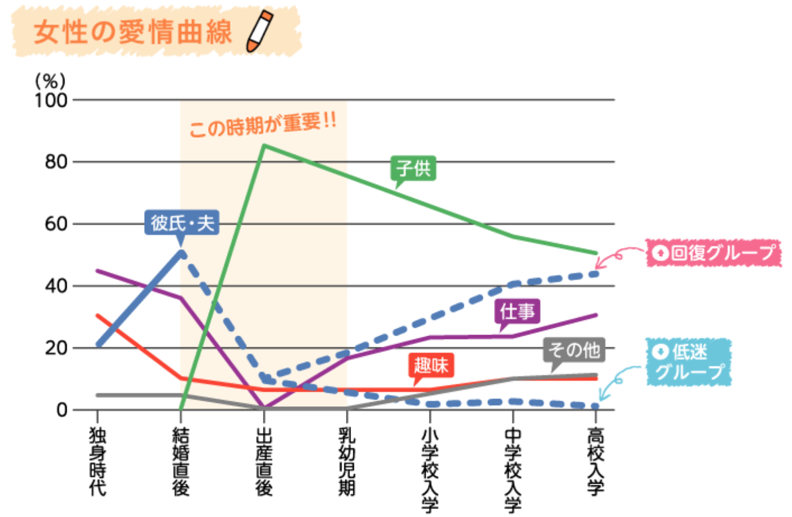
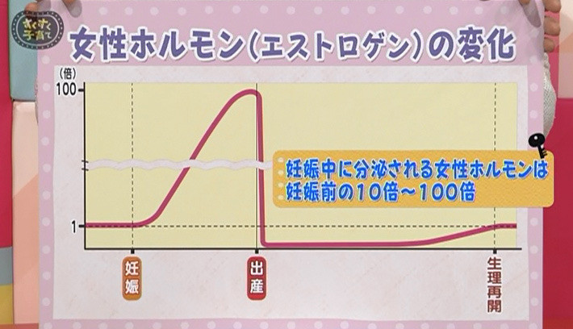

<!DOCTYPE html>
<html>
<head><meta name="generator" content="Hexo 3.9.0">
  <meta charset="utf-8">
  
<!-- Google Analytics -->
<script type="text/javascript">
(function(i,s,o,g,r,a,m){i['GoogleAnalyticsObject']=r;i[r]=i[r]||function(){
(i[r].q=i[r].q||[]).push(arguments)},i[r].l=1*new Date();a=s.createElement(o),
m=s.getElementsByTagName(o)[0];a.async=1;a.src=g;m.parentNode.insertBefore(a,m)
})(window,document,'script','//www.google-analytics.com/analytics.js','ga');

ga('create', 'UA-2714410-4', 'auto');
ga('require', 'linkid', 'linkid.js');
ga('send', 'pageview');

</script>
<!-- End Google Analytics -->


  
  <title>男性はただ育休を取ればいい訳ではなはい。家族の絆を深める秘訣とは？ | 共働き夫婦の楽らくライフ</title>
  <meta name="viewport" content="width=device-width, initial-scale=1, maximum-scale=1">
  
    <meta name="description" content="男性が育休をとるということは、イコール「育休期間中は夫もずっと家族と一緒にいる」ということです。 基本、土日祝日しかあまり家にいない夫も毎日24時間ずっと家にいて家族と過ごします。これだけ聞くと家族の絆が深まりそう！とも思えますが実際はどうなのでしょうか。よくよく考えると正直いって不安な人もいるのでは！？ 結論をいってしまうと、育休中に夫がどう過ごすか次第で家族の絆は深くもなるし悪くもなります">
<meta name="keywords" content="男性,育休,家族の絆,夫婦仲">
<meta property="og:type" content="article">
<meta property="og:title" content="男性はただ育休を取ればいい訳ではなはい。家族の絆を深める秘訣とは？">
<meta property="og:url" content="https://tomoraku-life.com/parental-leave-conjugal-relations/index.html">
<meta property="og:site_name" content="共働き夫婦の楽らくライフ">
<meta property="og:description" content="男性が育休をとるということは、イコール「育休期間中は夫もずっと家族と一緒にいる」ということです。 基本、土日祝日しかあまり家にいない夫も毎日24時間ずっと家にいて家族と過ごします。これだけ聞くと家族の絆が深まりそう！とも思えますが実際はどうなのでしょうか。よくよく考えると正直いって不安な人もいるのでは！？ 結論をいってしまうと、育休中に夫がどう過ごすか次第で家族の絆は深くもなるし悪くもなります">
<meta property="og:locale" content="ja">
<meta property="og:image" content="https://tomoraku-life.com/parental-leave-conjugal-relations/thumnail_photo-1495911713173-f2aad71fc421.jpeg">
<meta property="og:updated_time" content="2019-07-15T15:00:00.000Z">
<meta name="twitter:card" content="summary_large_image">
<meta name="twitter:title" content="男性はただ育休を取ればいい訳ではなはい。家族の絆を深める秘訣とは？">
<meta name="twitter:description" content="男性が育休をとるということは、イコール「育休期間中は夫もずっと家族と一緒にいる」ということです。 基本、土日祝日しかあまり家にいない夫も毎日24時間ずっと家にいて家族と過ごします。これだけ聞くと家族の絆が深まりそう！とも思えますが実際はどうなのでしょうか。よくよく考えると正直いって不安な人もいるのでは！？ 結論をいってしまうと、育休中に夫がどう過ごすか次第で家族の絆は深くもなるし悪くもなります">
<meta name="twitter:image" content="https://tomoraku-life.com/parental-leave-conjugal-relations/thumnail_photo-1495911713173-f2aad71fc421.jpeg">
<meta name="twitter:creator" content="@tomoraku_life">
  
  
    <link rel="alternate" href="/atom.xml" title="共働き夫婦の楽らくライフ" type="application/atom+xml">
  
  
    <link rel="icon" href="/images/favicon.ico">
  
  
    <link href="//fonts.googleapis.com/css?family=Source+Code+Pro" rel="stylesheet" type="text/css">
  
  <link rel="stylesheet" href="/css/style.css">
  <link href="https://fonts.googleapis.com/css?family=Concert+One" rel="stylesheet">
  <link rel="stylesheet" href="https://use.fontawesome.com/releases/v5.7.0/css/all.css">

  <script async src="//pagead2.googlesyndication.com/pagead/js/adsbygoogle.js"></script>
  <script>
     (adsbygoogle = window.adsbygoogle || []).push({
          google_ad_client: "ca-pub-7705145221063766",
          enable_page_level_ads: true
     });
  </script>
</head>
</html>
<body>
  <div id="container">
    <div id="wrap">
      <header id="header">
  <div id="banner"></div>
  <div id="header-outer" class="outer">
    <div id="header-title" class="inner">
      <h1 id="logo-wrap">
        <!--<a href="/" id="logo">共働き夫婦の楽らくライフ</a>-->
        <a href="/" id="logo"></a>
      </h1>
      
        <h2 id="subtitle-wrap">
          <a href="/" id="subtitle">現代を生きる多忙な共働き世帯が、いかに楽して楽しく生活できるかを考えるブログです</a>
        </h2>
      
    </div>
    <div id="header-inner" class="inner">
      <nav id="main-nav">
        <a id="main-nav-toggle" class="nav-icon"></a>
        
          <a class="main-nav-link" href="/categories/育休パパの経験談/">育休パパの経験談</a>
        
          <a class="main-nav-link" href="/categories/株主優待生活/">株主優待生活</a>
        
          <a class="main-nav-link" href="/categories/資産運用/">資産運用</a>
        
          <a class="main-nav-link" href="/categories/マイホーム/">マイホーム</a>
        
          <a class="main-nav-link" href="/about-this-page">プロフィール</a>
        
      </nav>
      <nav id="sub-nav">
        
          <a id="nav-rss-link" class="nav-icon" href="/atom.xml" title="RSSフィード"></a>
        
        <a id="nav-search-btn" class="nav-icon" title="検索"></a>
      </nav>
      <div id="search-form-wrap">
        <form action="//google.com/search" method="get" accept-charset="UTF-8" class="search-form"><input type="search" name="q" class="search-form-input" placeholder="Search"><button type="submit" class="search-form-submit">&#xF002;</button><input type="hidden" name="sitesearch" value="https://tomoraku-life.com"></form>
      </div>
    </div>
  </div>
</header>
      <div class="outer">
        <section id="main"><article id="post-parental-leave-conjugal-relations" class="article article-type-post" itemscope itemprop="blogPost">
  <!--
  <div class="article-meta">
    <a href="/parental-leave-conjugal-relations/" class="article-date">
  <time datetime="2019-07-03T07:32:35.000Z" itemprop="datePublished">2019.07.03</time>
</a>
    
  <div class="article-category">
    <a class="article-category-link" href="/categories/育休パパの経験談/">育休パパの経験談</a>
  </div>

  </div>
-->
  <div class="article-inner">
    
    
      <header class="article-header">
        
  

    <ul class="breadcrumb">
        <li itemscope="itemscope" itemtype="http://data-vocabulary.org/Breadcrumb">
        <a href="/" itemprop="url">
         <span itemprop="title">ホーム</span>
        </a>
        </li>
        <li itemscope="itemscope" itemtype="http://data-vocabulary.org/Breadcrumb">
        <a href="/categories/育休パパの経験談" itemprop="url">
         <span itemprop="title">育休パパの経験談</span>
        </a>
        </li>
        <li itemscope="itemscope" itemtype="http://data-vocabulary.org/Breadcrumb">
        <a href="" itemprop="url">
         <span itemprop="title"></span>
        </a>
        </li>
    </ul>

    <h1 class="article-title" itemprop="name">
      男性はただ育休を取ればいい訳ではなはい。家族の絆を深める秘訣とは？
    </h1>

    <div class="article-date">
        <time datetime="2019-07-03T07:32:35.000Z" itemprop="datePublished" class="published">2019.07.03</time>
        
          <time datetime="2019-07-15T15:00:00.000Z" itemprop="dateModified" class="modified">2019.07.16</time>
        
    </div>
    
    

      </header>
    

    
      <div class="sns_buttons">
    
<ul class="shareList">
  <li class="shareList__item"><a class="shareList__link icon-twitter" href="https://twitter.com/intent/tweet?text=男性はただ育休を取ればいい訳ではなはい。家族の絆を深める秘訣とは？ https://tomoraku-life.com/parental-leave-conjugal-relations/index.html" onClick="window.open(encodeURI(decodeURI(this.href)),'twwindow','width=550, height=450, personalbar=0, toolbar=0, scrollbars=1'); return false;" target="_blank" title="Twitter"></a></li>
  <li class="shareList__item"><a class="shareList__link icon-facebook" href="http://www.facebook.com/share.php?u=https://tomoraku-life.com/parental-leave-conjugal-relations/index.html" onClick="window.open(encodeURI(decodeURI(this.href)),'fbwindow','width=550, height=450, personalbar=0, toolbar=0, scrollbars=1'); return false;" target="_blank" title="Facebook"></a></li>
  <li class="shareList__item"><a class="shareList__link icon-hatebu" href="http://b.hatena.ne.jp/add?mode=confirm&url=https://tomoraku-life.com/parental-leave-conjugal-relations/index.html&title=男性はただ育休を取ればいい訳ではなはい。家族の絆を深める秘訣とは？" target="_blank" title="はてなブックマーク"></a></li>
  <li class="shareList__item"><a class="shareList__link icon-line" href="http://line.me/R/msg/text?男性はただ育休を取ればいい訳ではなはい。家族の絆を深める秘訣とは？ https://tomoraku-life.com/parental-leave-conjugal-relations/index.html" target="_blank" title="LINE"></a></li>
</ul>
</div>

    

    <div class="article-entry" itemprop="articleBody">
      
        

<p>男性が育休をとるということは、イコール「<strong>育休期間中は夫もずっと家族と一緒にいる</strong>」ということです。</p>
<p>基本、土日祝日しかあまり家にいない夫も毎日24時間ずっと家にいて家族と過ごします。これだけ聞くと家族の絆が深まりそう！とも思えますが実際はどうなのでしょうか。よくよく考えると正直いって不安な人もいるのでは！？</p>
<p>結論をいってしまうと、<strong>育休中に夫がどう過ごすか次第で家族の絆は深くもなるし悪くもなります</strong>。</p>
<p>男性の育休経験者が「育休を取得して本当によかった！家族の絆が深まった！」という感想をもつことが多いです。対して、最近のブームにのって育休を取得した夫がまったく家事・育児をしないで遊んでばかりいたりするなど、妻の負担や不満がむしろたまってしまい家庭環境が悪化するケースもあるようです。</p>
<p>せっかく育休を取得するのですから前者のように「育休を取得してよかった！」となりたいものです。そこで、本記事ではとくに妻との関係にフォーカスして、<strong>育休を通じてどうすれば夫婦仲を良好にすることができるか</strong>、というテーマで解説していきたいと思います。</p>
<a id="more"></a>

<div class="toc">

<!-- toc -->

<ul>
<li><a href="#mazuhakokokara-chan-hou-nonu-xing-niokoruxin-shen-nobian-hua-woba-wo-siyou">まずはここから、産後の女性におこる心身の変化を把握しよう</a><ul>
<li><a href="#fu-gayu-er-nican-jia-surukotodeqi-noai-qing-gashang-xiang-ku">夫が育児に参加することで妻の愛情が上向く</a></li>
<li><a href="#chan-hou-noqi-habu-an-yake-li-tiwogan-ziyasui">産後の妻は不安や苛立ちを感じやすい</a></li>
<li><a href="#ti-henodamezitopi-retoze-ren-gan">体へのダメージと疲れと責任感</a></li>
</ul>
</li>
<li><a href="#deha-fu-fu-zhong-woliang-kusurunihadousurebaliang-inoka">では、夫婦仲を良くするにはどうすれば良いのか</a><ul>
<li><a href="#zhu-ti-de-niyu-er-jia-shi-niqu-rizu-mou">主体的に育児・家事に取り組もう</a></li>
<li><a href="#qi-noxin-nobian-hua-nigong-gan-siteshou-keru-reyou">妻の心の変化に共感して受け入れよう</a></li>
</ul>
</li>
<li><a href="#matome">まとめ</a><ul>
<li><a href="#awasetekotiranoji-shi-modouzo">あわせてこちらの記事もどうぞ</a></li>
</ul>
</li>
</ul>
<!-- tocstop -->

</div>

<h2><span id="mazuhakokokara-chan-hou-nonu-xing-niokoruxin-shen-nobian-hua-woba-wo-siyou">まずはここから、産後の女性におこる心身の変化を把握しよう</span><a href="#mazuhakokokara-chan-hou-nonu-xing-niokoruxin-shen-nobian-hua-woba-wo-siyou" class="header-anchor">#</a></h2><h3><span id="fu-gayu-er-nican-jia-surukotodeqi-noai-qing-gashang-xiang-ku">夫が育児に参加することで妻の愛情が上向く</span><a href="#fu-gayu-er-nican-jia-surukotodeqi-noai-qing-gashang-xiang-ku" class="header-anchor">#</a></h3><p>夫が育児参加することで妻から夫への愛情が上向くというデータがあります。これによると、将来的な夫婦仲の分岐点は出産直後ということになります。つまり<strong>「出産直後」の時期を夫がどのように過ごしたかが生涯における夫婦仲に非常に重要なポイントになってくるということです</strong>。</p>
<blockquote>
<p>子供が生まれると子供がトップの座につき、夫への愛情はがくっと下がります。その後、徐々に回復していくグループと、 低迷していくグループに二極化します。大変な乳幼児期に「夫と二人で子育てした」と回答した女性たちの夫への愛情は回復し、「私一人で子育てした」と回答した女性たちの愛情は低迷します（下図）。<br><span class="image-caption">夫婦の愛情曲線の変遷</span><br><cite><a href="http://www1.tokyo-womens-plaza.metro.tokyo.jp/Portals/0/jigyou/wlb/curve.html" target="_blank" rel="noopener">（出典）東レ経営研究所ダイバーシティ＆ワークライフバランス研究部長　渥美由喜著「夫婦の愛情曲線の変遷」</a></cite></p>
</blockquote>
<div class="talk"><div class="faceicon"><div class="name">コマ</div></div><div class="chatting"><div class="says">
<p>夫としてはちょっと悲しいですね・・・。ただ仕事や趣味よりは上なのが救いです。</p>
</div></div></div>

<h3><span id="chan-hou-noqi-habu-an-yake-li-tiwogan-ziyasui">産後の妻は不安や苛立ちを感じやすい</span><a href="#chan-hou-noqi-habu-an-yake-li-tiwogan-ziyasui" class="header-anchor">#</a></h3><p>女性の体は産後に女性ホルモンの代表格である「エストロゲン」が激減します。この<strong>ホルモンバランスの急激な変化により頭痛・髪や肌があれる・精神が不安定になるなどのさまざまな症状が生じます</strong>。</p>
<blockquote>
<p><span class="image-caption">女性ホルモン（エストロゲン）の変化</span><br><cite><a href="https://www.sukusuku.com/contents/qa/148657" target="_blank" rel="noopener">（出典）産後の体に起こる不調、その原因は？｜すくコム by NHKエデュケーショナル</a></cite></p>
</blockquote>
<p>さらに、女性の体は産後に愛情ホルモンと呼ばれる「オキシトシン」の量が増加します。このホルモンの働きにより、赤ちゃんに愛情をもって接するための母性を発揮できます。しかし、「赤ちゃんを守る」と強く思う反面、<strong>外敵を排除するためにその攻撃性が増してしまうという副作用を併せ持っています</strong>。そのために、夫を含め他人のちょっとした行動でも気になってしまいすぐにイライラしてしまうのです。</p>
<h3><span id="ti-henodamezitopi-retoze-ren-gan">体へのダメージと疲れと責任感</span><a href="#ti-henodamezitopi-retoze-ren-gan" class="header-anchor">#</a></h3><p>産後の妻は少なくとも夫よりもに以下の2つによって体に負担がかかっています。</p>
<ul>
<li>出産による体へのダメージ</li>
<li>3時間ごとの授乳による睡眠不足</li>
</ul>
<p>さらに、母親になった責任感により心の負担も感じています。夫も父親になった責任感を感じると思いますが、もしかしたらホルモンの「オキシトシン」が増量している妻のほうが強く感じているかもしれません。</p>
<h2><span id="deha-fu-fu-zhong-woliang-kusurunihadousurebaliang-inoka">では、夫婦仲を良くするにはどうすれば良いのか</span><a href="#deha-fu-fu-zhong-woliang-kusurunihadousurebaliang-inoka" class="header-anchor">#</a></h2><p>ここまで書いたように女性は出産後に主に以下の4つの要因で心身ともに負担がかかっています。<strong>男性は出産を通じて体の変化がないためあまり感じませんが、夫は妻にかかっている負担を可能なかぎり想像しましょう</strong>。</p>
<ul>
<li>出産による体へのダメージ</li>
<li>ホルモン（エストロゲン、オキシトシン）の変化により不安や苛立ちを感じやすい</li>
<li>育児による体と心の疲れ</li>
<li>母親になった責任感</li>
</ul>
<p>このことを念頭において夫がやるべきことは主に2点です。どういうことか具体的に解説します。</p>
<h3><span id="zhu-ti-de-niyu-er-jia-shi-niqu-rizu-mou">主体的に育児・家事に取り組もう</span><a href="#zhu-ti-de-niyu-er-jia-shi-niqu-rizu-mou" class="header-anchor">#</a></h3><p>この記事の冒頭で引用したデータにあったように、出産により減少した妻から夫への愛情が回復するためには大変な乳幼児期に「二人で」子育てすることが重要とされています。これは、<strong>パートナーとして一緒に育児へと取り組む姿勢が求められています</strong>。良く批判されるように「手伝う」や「協力する」という態度では不十分ということです。</p>
<p>妻はどうしても産後に体力が落ちており、そのなかで3時間ごとの授乳をしています。これだけでもかなりの負担を抱えています。<strong>妻は疲れが溜まった状態だと不安やイライラを感じやすくなります</strong>。そこで、夫はいかに妻の負担を軽くしてあげるかを考えることが重要となります。</p>
<p><strong>育児に比べると家事は夫が担いやすいため、「育休中の家事は俺にまかせろ」くらいの気持ちでいるのがちょうどよい</strong>と思います。ただ、家事が上手ではない夫が急に家事こなそうとすると、危なっかしくて妻がじれったく思ったり逆にストレスを感じてしまう場合もあるのでご注意を。慣れないうちは妻に家事の仕方を教えてもらったり、妻に負担がかからない程度に分担してもらったりすると良いと思います。</p>
<p>また、仕事に遅れをとらないように、育休中に勉強したり資格を取ったりしようと考える男性も多いのではないでしょうか。それはそれで重要なことですが、育休を取得した理由や目的を履き違えないで家事・育児を優先しましょう。あくまで勉強は余った時間を充てるのが良いと思います。</p>
<h3><span id="qi-noxin-nobian-hua-nigong-gan-siteshou-keru-reyou">妻の心の変化に共感して受け入れよう</span><a href="#qi-noxin-nobian-hua-nigong-gan-siteshou-keru-reyou" class="header-anchor">#</a></h3><p>育休中は妻を最優先に考えましょう。妻を一番、赤ちゃんが二番。自分のことはそのあとです。妻は赤ちゃんが産まれたことによる体や環境の変化が大きすぎて、妻自身もついていけません。そこで、<strong>もっとも身近な人間である夫が共感を示すことが妻にとってもっとも大きな心の支えになります</strong>。赤ちゃんのことは妻が最大限に考えてくれていますが、妻のケアをするのは夫にしかできない役割です。</p>
<p>とくに産後のホルモンの変化や疲れにより妻は常にイライラしやすい状態にあります。そこで、夫も一緒になって感情的になってしまっては余計に妻の負担になるだけで解決しません。<strong>妻がイライラしてしていた場合「ああ、疲れているのかな。ホルモンの変化の影響かな。」と心の中で思うと冷静になれます</strong>。妻のイライラしている気持ちに共感する姿勢でいるのが一番です。</p>
<p>また、積極的に赤ちゃんをあやすのを代わったりして妻がゆっくりできる時間を作りましょう。そうすれば、妻の疲れも取れて負担感がさがり、妻が不安や苛立ちを感じてしまうことも少なくなるのではないかと思います。</p>
<h2><span id="matome">まとめ</span><a href="#matome" class="header-anchor">#</a></h2><p>この記事では育休中に男性が考えるべきポイントは以下の2つと解説しました。</p>
<ul>
<li>主体的に育児・家事を担い、妻の負担感を減らす</li>
<li>妻に心の変化に共感して受け入れる</li>
</ul>
<p>仕事中心でこれまであまり家にいれなかった男性は、赤ちゃんの誕生と育休は家族との過ごし方を見つめ直すチャンスです。ワークライフバランスをちょっぴりでも「ライフ」よりにしてみてはいかがでしょうか。</p>
<div class="talk"><div class="faceicon"><div class="name">コマ</div></div><div class="chatting"><div class="says">
<p>せっかくとった育休なら「取ってよかった！」と思えるようにしたいです。</p>
</div></div></div>

<h3><span id="awasetekotiranoji-shi-modouzo">あわせてこちらの記事もどうぞ</span><a href="#awasetekotiranoji-shi-modouzo" class="header-anchor">#</a></h3><iframe class="hatenablogcard" style="width: 100%; height: 155px; max-width: 680px;" src="https://hatenablog-parts.com/embed?url=https://tomoraku-life.com/parental-leave-mind-change/" width="300" height="150" frameborder="0" scrolling="no"></iframe>
<iframe class="hatenablogcard" style="width: 100%; height: 155px; max-width: 680px;" src="https://hatenablog-parts.com/embed?url=https://tomoraku-life.com/parental-leave-vs-homecoming/" width="300" height="150" frameborder="0" scrolling="no"></iframe>
<iframe class="hatenablogcard" style="width: 100%; height: 155px; max-width: 680px;" src="https://hatenablog-parts.com/embed?url=https://tomoraku-life.com/parental-leave-merit/" width="300" height="150" frameborder="0" scrolling="no"></iframe>


      
    </div>

    
      <div class="sns_buttons">
    
      この記事が気に入ったら友達にシェアしよう
    
<ul class="shareList">
  <li class="shareList__item"><a class="shareList__link icon-twitter" href="https://twitter.com/intent/tweet?text=男性はただ育休を取ればいい訳ではなはい。家族の絆を深める秘訣とは？ https://tomoraku-life.com/parental-leave-conjugal-relations/index.html" onClick="window.open(encodeURI(decodeURI(this.href)),'twwindow','width=550, height=450, personalbar=0, toolbar=0, scrollbars=1'); return false;" target="_blank" title="Twitter"></a></li>
  <li class="shareList__item"><a class="shareList__link icon-facebook" href="http://www.facebook.com/share.php?u=https://tomoraku-life.com/parental-leave-conjugal-relations/index.html" onClick="window.open(encodeURI(decodeURI(this.href)),'fbwindow','width=550, height=450, personalbar=0, toolbar=0, scrollbars=1'); return false;" target="_blank" title="Facebook"></a></li>
  <li class="shareList__item"><a class="shareList__link icon-hatebu" href="http://b.hatena.ne.jp/add?mode=confirm&url=https://tomoraku-life.com/parental-leave-conjugal-relations/index.html&title=男性はただ育休を取ればいい訳ではなはい。家族の絆を深める秘訣とは？" target="_blank" title="はてなブックマーク"></a></li>
  <li class="shareList__item"><a class="shareList__link icon-line" href="http://line.me/R/msg/text?男性はただ育休を取ればいい訳ではなはい。家族の絆を深める秘訣とは？ https://tomoraku-life.com/parental-leave-conjugal-relations/index.html" target="_blank" title="LINE"></a></li>
</ul>
</div>

    

    <div class="article-entry">
      <!-- Google Adsense -->
      <script async src="https://pagead2.googlesyndication.com/pagead/js/adsbygoogle.js"></script>
      <!-- ディスプレイ(記事の終わり) -->
      <ins class="adsbygoogle"
          style="display:block"
          data-ad-client="ca-pub-7705145221063766"
          data-ad-slot="8691379280"
          data-ad-format="auto"
          data-full-width-responsive="true"></ins>
      <script>
          (adsbygoogle = window.adsbygoogle || []).push({});
      </script>
      <!-- Google Adsense -->
    </div>

    <div class="article-entry">
      <h3>あなたへのオススメ記事</h3>
      <!-- Google Adsense -->
      <script async src="https://pagead2.googlesyndication.com/pagead/js/adsbygoogle.js"></script>
      <ins class="adsbygoogle"
          style="display:block"
          data-ad-format="autorelaxed"
          data-ad-client="ca-pub-7705145221063766"
          data-ad-slot="6224465210"></ins>
      <script>
          (adsbygoogle = window.adsbygoogle || []).push({});
      </script>
      <!-- Google Adsense -->
    </div>

    <footer class="article-footer">
      
    </footer>

  </div>
</article>

</section>
        
          <aside id="sidebar">
  
    <div class="widget-wrap">
  <h3 class="widget-title">自己紹介</h3>
  <div class="widget">
    <div style="text-align: center;">
      
      <p>コマ</p>
    </div>
    <p>
      妻と子供２人とマイホームで暮らし、日々「いかに楽して」「いかに楽しく」生活できるかを考えています。
      子供が産まれたタイミングで育休を取得したことで人生が豊かになりました。
    </p>
    <div style="text-align: center;">
      <a href="https://twitter.com/tomoraku_life?ref_src=twsrc%5Etfw" class="twitter-follow-button"
        data-show-count="false">Follow @tomoraku_life</a>
      <script async src="https://platform.twitter.com/widgets.js" charset="utf-8"></script>
    </div>
    <p>
      お問い合わせ・ご連絡はTwitterのDMにてお受けします。
    </p>
  </div>
</div>
  
    
  <div class="widget-wrap">
    <h3 class="widget-title">カテゴリ</h3>
    <div class="widget">
      <ul class="category-list"><li class="category-list-item"><a class="category-list-link" href="/categories/Apple製品/">Apple製品</a><span class="category-list-count">12</span></li><li class="category-list-item"><a class="category-list-link" href="/categories/ふるさと納税/">ふるさと納税</a><span class="category-list-count">5</span></li><li class="category-list-item"><a class="category-list-link" href="/categories/ブログ運営/">ブログ運営</a><span class="category-list-count">2</span></li><li class="category-list-item"><a class="category-list-link" href="/categories/プログラミング/">プログラミング</a><span class="category-list-count">3</span></li><li class="category-list-item"><a class="category-list-link" href="/categories/マイホーム/">マイホーム</a><span class="category-list-count">12</span></li><li class="category-list-item"><a class="category-list-link" href="/categories/妊活／不妊治療/">妊活／不妊治療</a><span class="category-list-count">4</span></li><li class="category-list-item"><a class="category-list-link" href="/categories/子育て/">子育て</a><span class="category-list-count">5</span></li><li class="category-list-item"><a class="category-list-link" href="/categories/日記/">日記</a><span class="category-list-count">17</span></li><li class="category-list-item"><a class="category-list-link" href="/categories/株主優待生活/">株主優待生活</a><span class="category-list-count">8</span></li><li class="category-list-item"><a class="category-list-link" href="/categories/生活の知恵/">生活の知恵</a><span class="category-list-count">30</span></li><li class="category-list-item"><a class="category-list-link" href="/categories/育休パパの経験談/">育休パパの経験談</a><span class="category-list-count">10</span></li><li class="category-list-item"><a class="category-list-link" href="/categories/読書/">読書</a><span class="category-list-count">1</span></li><li class="category-list-item"><a class="category-list-link" href="/categories/資産運用/">資産運用</a><span class="category-list-count">8</span></li><li class="category-list-item"><a class="category-list-link" href="/categories/音楽/">音楽</a><span class="category-list-count">5</span></li></ul>
    </div>
  </div>


  
</aside>
        
      </div>
      <footer id="footer">
  
  <div class="outer">
    <div id="footer-info" class="inner">
      &copy; 2019 共働き夫婦の楽らくライフ
    </div>
  </div>
</footer>
    </div>
    <nav id="mobile-nav">
  
    <a href="/categories/育休パパの経験談/" class="mobile-nav-link">育休パパの経験談</a>
  
    <a href="/categories/株主優待生活/" class="mobile-nav-link">株主優待生活</a>
  
    <a href="/categories/資産運用/" class="mobile-nav-link">資産運用</a>
  
    <a href="/categories/マイホーム/" class="mobile-nav-link">マイホーム</a>
  
    <a href="/about-this-page" class="mobile-nav-link">プロフィール</a>
  
</nav>
    

<script src="//ajax.googleapis.com/ajax/libs/jquery/2.0.3/jquery.min.js"></script>


<script src="/js/script.js"></script>


  </div>
</body>
</html>